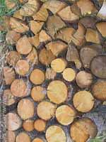

Who we are
Cumbria Woodlands was set up as Cumbria Broadleaves in 1991.
This followed over 5 years with a working group researching the problems linked to why the broadleaved woodland resource in Cumbria was in decline and what could be done to address this. In 1991, the project was set up with a project officer and part-time administrative support. In 1995, the project was the first in the region to receive European Objective 5b funding to run its highly acclaimed Woodland Skills Training Scheme. Original research was also commissioned at this time to provide information on a variety of aspects of adding value to low quality timber.
The project currently employs three staff, and the main area of work has shifted from providing simple advisory visits to becoming more focussed on working with farmers and businesses on how woodlands and forests can contribute to a vibrant rural economy. We are encouraging the land-owning community and wood-using businesses to think in a different way about how their woodland resources can help them make a sustainable living.
Our current main funders are the Forestry Commission, Leader+ and the North West Regional Development Agency through Cumbria Vision.
Cumbria County Council, Natural England and the Lake District National Park Authority also support us financially.
In addition to the above organisations, our Advisory Group is made up of representation from the East Cumbria Countryside Project, Friends of the Lake District, Cumbria Rural Enterprise Agency, Wood Education Programme, Woodland Trust, Country Land & Business Association, the Yorkshire Dales National Park Authority, the University of Cumbria's National School of Forestry and DEFRA.